Documento da rileggere in caso di dubbio: raccoglie tutto ciò che abbiamo fatto su logica, insiemi e quantificatori, con la teoria, le regole pratiche e gli esercizi svolti. Contenuto standard e universale, valido per il corso di Udine. Mappa dei simboli:
1. Logica proposizionale
Proposizione: affermazione con valore univoco Vero (V) o Falso (F). "π > 3" è V; "3 è pari" è F.
Connettivi e tabella di verità
Ogni connettivo si definisce elencando tutti i casi (con due proposizioni, 2² = 4 righe):
| p | q | ¬p | p∧q | p∨q | p→q | p↔︎q |
|---|---|---|---|---|---|---|
| V | V | F | V | V | V | V |
| V | F | F | F | V | F | F |
| F | V | V | F | V | V | F |
| F | F | V | F | F | V | V |
Chiave sull’implicazione p → q: è falsa solo quando p è V e q è F. Da premessa falsa segue qualunque cosa.
Implicazione: le quattro varianti
Diretta: p → q
Inversa: q → p — non equivalente
Contraria: ¬p → ¬q — non equivalente
Contronominale: ¬q → ¬p — equivalente (base della dimostrazione per contrapposizione)
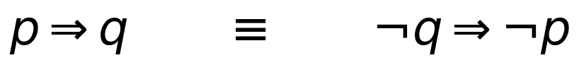
2. De Morgan e negazioni (logica)
Servono per negare le frasi composte:
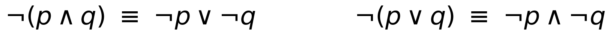
Negazione dell’implicazione (l’"allora" sparisce e diventa una "e"):
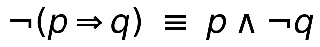
3. Quantificatori: ∀ e ∃ (il cuore)
∀x = "per ogni x": promessa senza eccezioni, vale su tutti.
∃x = "esiste almeno un x": basta un solo testimone.
Asimmetria fondamentale: ∀ è fragile (muore con un solo controesempio); ∃ è robusto (vive con un solo testimone).
| ∀x — per ogni | ∃x — esiste | |
|---|---|---|
| Significato | vale per TUTTI gli x | vale per ALMENO UN x |
| VERA quando | tutti soddisfano P | almeno uno soddisfa P |
| FALSA quando | c’è almeno un controesempio | nessuno soddisfa P |
| Per provarla VERA | ragionamento generale (tutti) | esibisci un testimone |
| Per provarla FALSA | esibisci un controesempio | ragionamento generale (nessuno) |
Negazione dei quantificatori
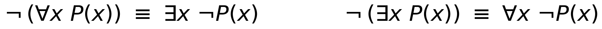
Non è un trucco a memoria: negare "tutti sono P" significa "ne esiste uno che non è P" (∀ → ∃); negare "esiste uno P" significa "tutti sono non-P" (∃ → ∀).
Quantificatori annidati e definizione di limite
L’ordine conta: ∀ε ∃δ significa "per ogni ε io trovo un δ (che può dipendere da ε)". Scambiare ∀ e ∃ cambia il significato.
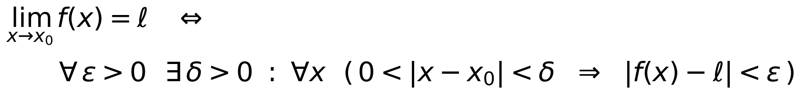
Per dimostrare che un limite NON esiste si nega tutto in cascata:
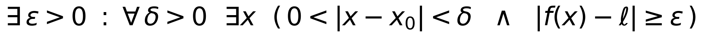
4. La ricetta della negazione (passo passo)
Le mosse per negare una frase con quantificatori sono sempre queste:
Mossa 1 — ∀ diventa ∃ (e viceversa); il ¬ entra dentro la parentesi.
Mossa 2 — ¬(p ⇒ q) = p ∧ ¬q (l’"allora" diventa "e"); e ¬(p ∧ q) = ¬p ∨ ¬q (De Morgan: "e" diventa "o").
Attenzione ai bordi: negare una disuguaglianza stretta gira il verso E aggiunge l’uguale. Il punto di bordo cambia sempre lato:
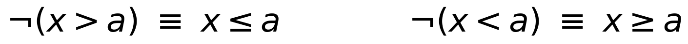
Controllo di coerenza: una frase e la sua negazione hanno sempre valori opposti. Se una è vera, l’altra è falsa.
5. Insiemi
Un insieme si dà per elencazione {1,2,3} o per proprietà { x ∈ ℝ : x² < 2 }. Notevoli: ℕ ⊂ ℤ ⊂ ℚ ⊂ ℝ.
Operazioni fondamentali
Unione A ∪ B: in A oppure in B.
Intersezione A ∩ B: sia in A sia in B.
Differenza A ∖ B: in A ma non in B.
Complementare Aᶜ: nell’universo U ma non in A.
De Morgan per gli insiemi
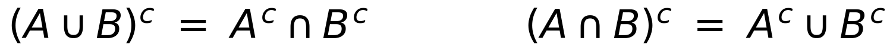
Dimostrazione: (A ∪ B)ᶜ = Aᶜ ∩ Bᶜ
Ogni riga è un "se e solo se"; poiché x è arbitrario, i due insiemi coincidono. È la De Morgan della logica, tradotta:
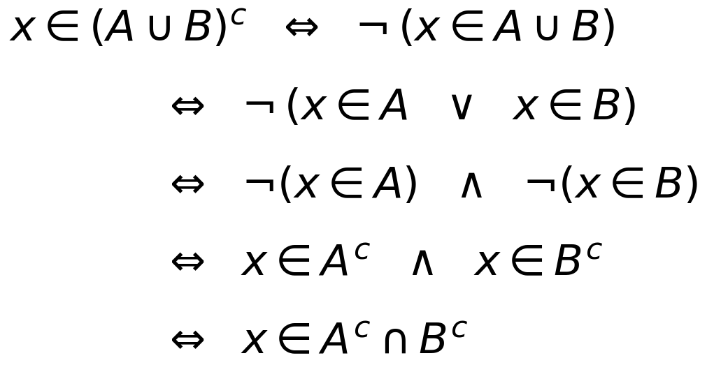
Il ponte logica – insiemi
Le operazioni sugli insiemi sono i connettivi logici applicati a "x appartiene a":
| Insiemi | Logica equivalente |
|---|---|
| x ∈ A ∩ B | x ∈ A ∧ x ∈ B |
| x ∈ A ∪ B | x ∈ A ∨ x ∈ B |
| x ∈ Aᶜ | ¬ (x ∈ A) |
| A ⊆ B | x ∈ A ⇒ x ∈ B |
Prodotto cartesiano e insieme delle parti
Prodotto cartesiano = coppie ordinate (l’ordine conta); insieme delle parti = tutti i sottoinsiemi (se |A| = n, ha 2ⁿ elementi).
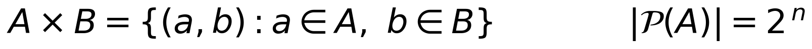
6. Esercizi svolti
Esercizio 1
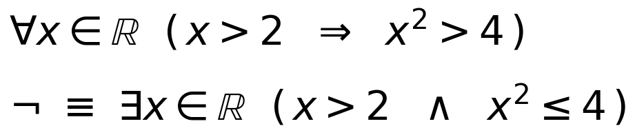
Verdetto: la frase di partenza è VERA (se x > 2 allora x² > 4, sempre). Quindi la negazione è FALSA.
Esercizio 2
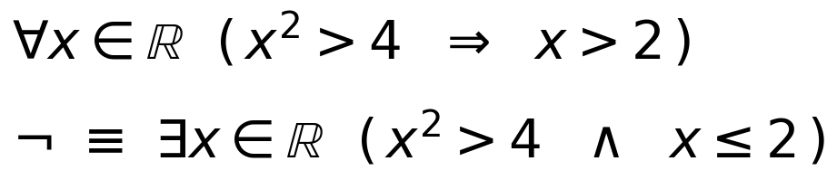
Verdetto: la frase di partenza è FALSA. Controesempio: x = −3, perché (−3)² = 9 > 4 (premessa vera) ma −3 > 2 è falso. Attenzione: x = −2 non vale, perché (−2)² = 4 e 4 > 4 è falso (premessa non soddisfatta).
Esercizio 3
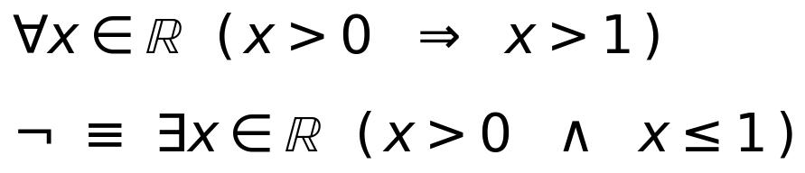
Verdetto: la frase di partenza è FALSA. Controesempi: qualunque numero in (0, 1], ad esempio 1/5 = 0,2 (è > 0 ma non > 1), oppure x = 1 (1 > 0 vero, 1 > 1 falso).
Esercizio 4
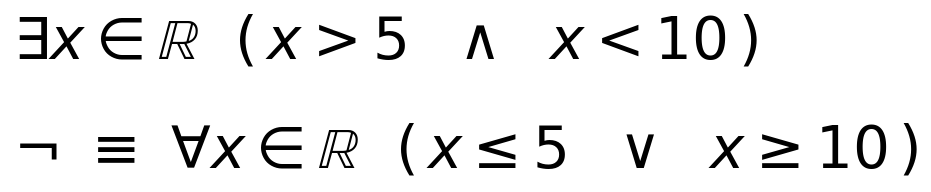
Verdetto: la frase di partenza è VERA. Testimone: qualunque numero tra 5 e 10, ad esempio 7 (7 > 5 e 7 < 10). Nota sui bordi: la negazione usa ≤ e ≥ perché 5 e 10 appartengono alla negazione.
7. Trappole tipiche da evitare
"Converge perché tende a 0" (per le serie): è solo condizione necessaria, non sufficiente.
Inversa ≠ contronominale: solo ¬q → ¬p è equivalente a p → q.
Premessa falsa: un’implicazione con premessa falsa è sempre vera.
Negare ∀ dà ∃ (e viceversa): per smentire un "per ogni" basta un controesempio con il conto fatto.
Bordi ≤ vs <: negando una disuguaglianza stretta, gira il verso e aggiungi l’uguale.
Ordine dei quantificatori: scambiare ∀ e ∃ cambia il significato dell’enunciato.